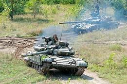

Guerra na Ucrânia completa um mês: veja o estado atual da invasão russa e cenários para o futuro
Após um mês de ataques, os confrontos estão concentrados em três frentes: Kiev, Kharkiv e a costa do Mar Negro. Especialista aponta que desfecho provável é que Rússia atinja objetivos militares com maior ou menor resistência ucraniana, e então negocie um fim para o confronto.
A invasão da Ucrânia pela Rússia completa um mês nesta quinta- feira (24) e a operação que alguns anteviam que poderia ser rápida, pela superioridade militar de Moscou, se mostra mais complicada e demorada, além de muito destrutiva onde os ucranianos apresentam maior resistência.
Após a "blitz" inicial com bombardeios de alvos por todo o país, os russos parecem ter dificuldades em impor seu poderio aos ucranianos, embora afirmem que tudo esteja transcorrendo como previsto.
Em que ponto está a invasão atualmente
abela comparando a força de Ucrânia e rússia
Rússia e Ucrânia: veja lista de filmes para entender a guerra
Este é um bom lugar para saber mais sobre o assunto,caso não fique satisfeito.AQUI
QUAL DUVIDA OU OPINIÃO DE MELHORA CLICK AQUI